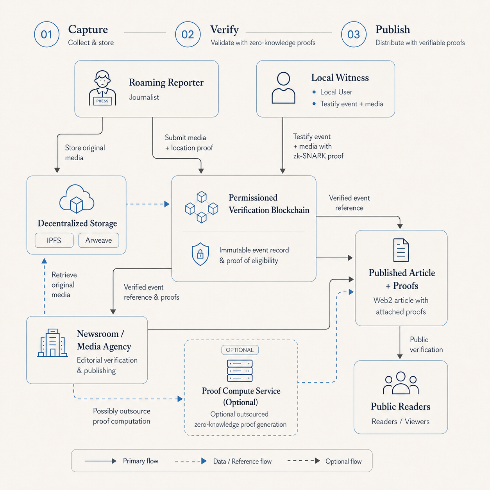
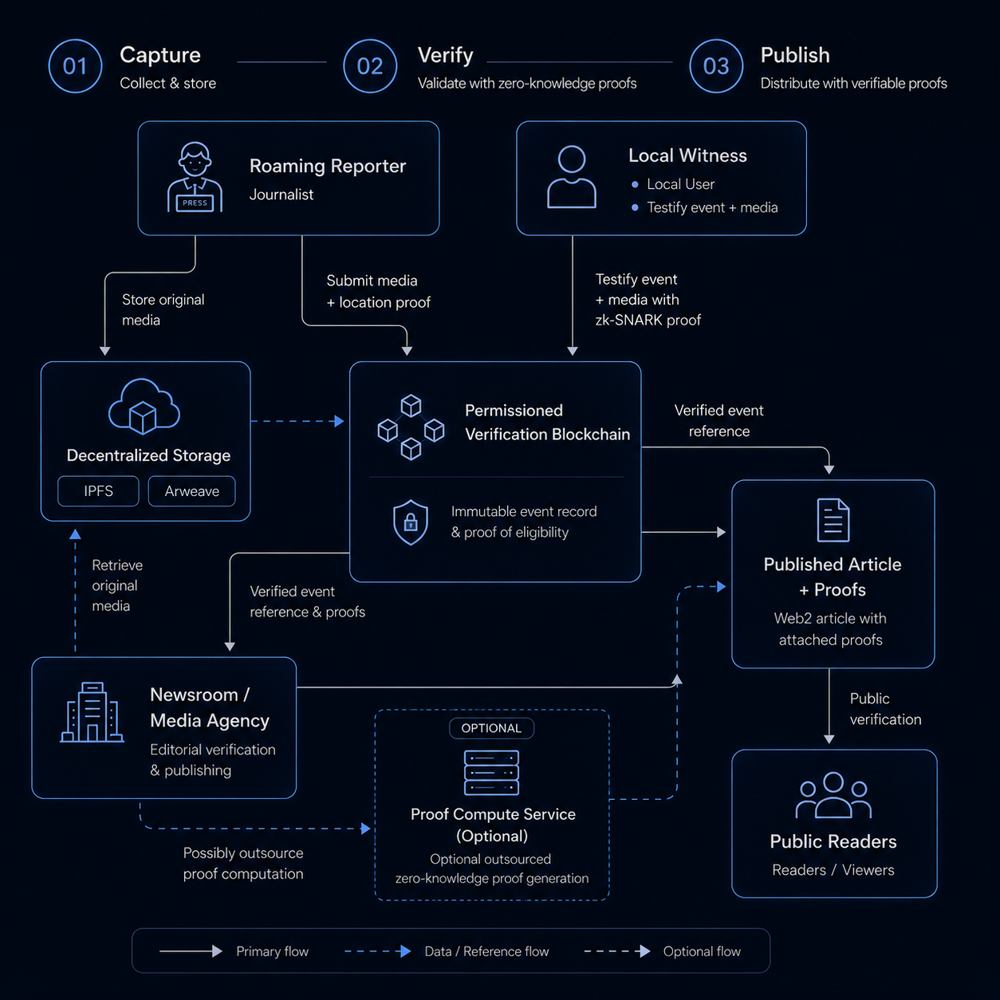

Verify news authenticity,
cryptographically.
inMediaVeritas commits media to IPFS and an on-chain record the moment it's captured, then has local witnesses confirm it — proving their eligibility to vote with zero-knowledge proofs, without revealing who they are, instead of asking you to simply trust the byline.
Three roles, one verification record
Reporters, local witnesses and news agencies each play a distinct part — no single one of them decides what's true alone.
Field reporters
Capture original media on the ground and submit it with a cryptographic hash and a zero-knowledge identity proof, the moment a story happens.
People near the event
Confirm or dispute what happened by voting on-chain, deduplicated by a credential-derived hash so no one votes twice. Fully anonymous, location-bound proofs for witnesses are proven in the circuits and next on the roadmap to reach the app.
Editors & newsrooms
Review provenance and witness consensus before publishing. A subscription to a stream of verified stories is planned, not yet live.
From story to on-chain proof
Four steps connect a reporter's original media to a public, tamper-evident record — understandable at a glance, verifiable by anyone.
Capture & hash
A reporter submits the original article or media. It's fingerprinted with a cryptographic hash the moment it's captured.
Pin to IPFS
The content and its hash are pinned to IPFS. Its content ID is a self-verifying fingerprint — anyone can confirm the file matches, no matter who serves it.
Generate a zk-proof
A Groth16 zk-SNARK proves the sender holds a valid, authority-issued credential — without revealing who they are.
Commit on-chain
The proof and record are written to an Ethereum-compatible smart contract — checkable by any reader, running today on a local test chain as the proof-of-concept moves toward public deployment.
Why you don't have to take our word for it
Every claim here is checkable: the paper, the documentation, and the exact cryptography in use.
Technical specification
- Proof systemGroth16 zk-SNARK
- Proving curveBN254
- In-circuit curveBaby Jubjub
- Content storageIPFS · Kubo
- Verification layerEthereum smart contracts
- Witness identityNever revealed on-chain
No proprietary black box: the same primitives used in production zk-rollups, applied to media provenance instead of transactions.
System architecture
The full path from reporter and witness to published article and public reader — including where zero-knowledge proofs and on-chain records fit in.


fig. 1 — reporter/witness capture → IPFS storage & on-chain proof record → newsroom review → published article with attached proofs
See it in action
This short walkthrough follows the full flow through inMediaVeritas, end to end:
It's an early build, so expect rough edges — but identity proof generation, on-chain event creation and proof verification are fully working end to end.
Reduce verification time.
Increase confidence before publishing.
Get pilot access, technical updates and early product insights for your newsroom.
Get early access